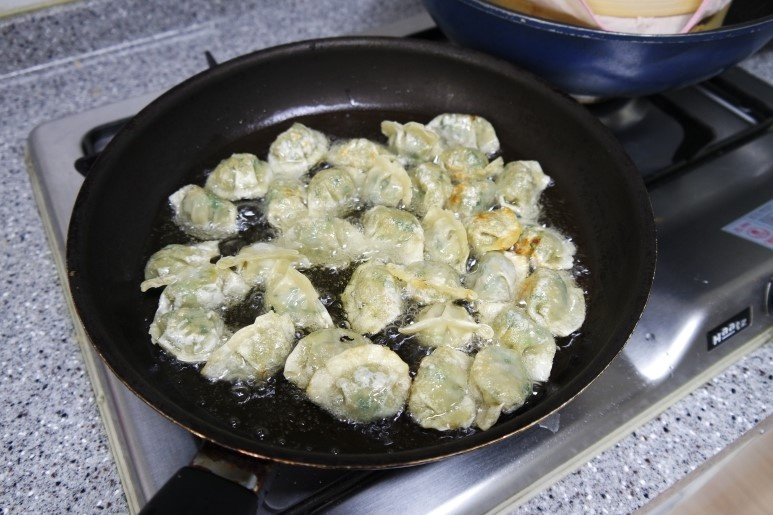
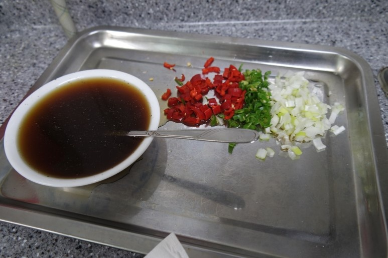
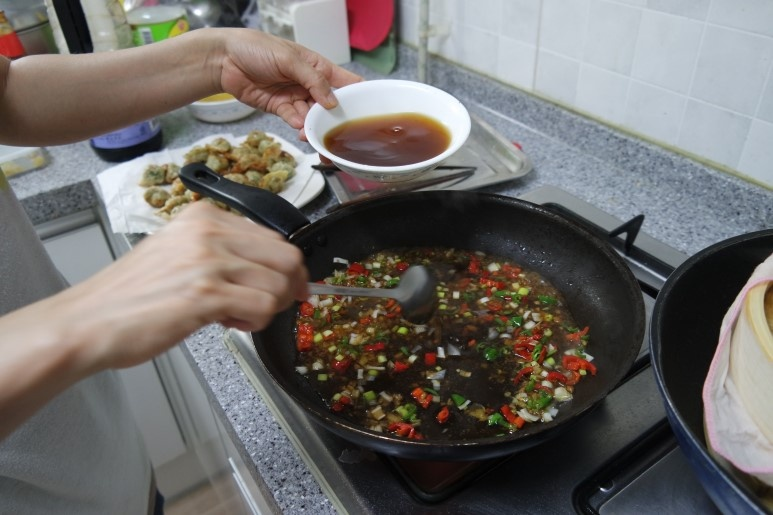

Chinese Food


재료 리스트
물만두 30개 | 청피망 1/2개 | 홍고추 2개 | 마늘 3개 | 대파 약간
깐풍만두 소스( 물 1/2컵 | 굴소스 한 스푼 | 간장 반스푼 | 설탕 반스푼 | 식초 한스푼 반 | 후추 약간 | 참기름 반 스푼 )
레시피
1. 물만두를 기름에 노릇노릇 해질 때 까지 튀겨 주세요.

2. 양념 소스를 비율에 맞춰 준비해 주시고, 준비된 채소류를 잘게 썰어주세요.

3. 준비된 팬에 기름을 넉넉히 두르고 다진 마늘과 다진 파를 넣은 뒤 볶아주시고
양념소스와 다진 홍고추, 청고추를 넣고 끓여주세요.

4. 소스가 끓는다면 튀긴 만두를 넣고 잘 버무려 주신뒤 접시에 옮겨 주세요.
깐풍 만두 완성 !!